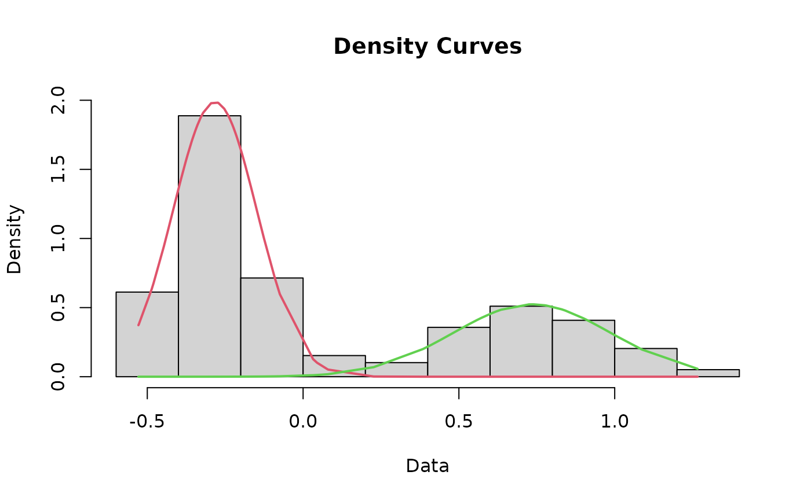

This function fits curves to the dataset. As a matter of course, this function runs the cleanData, datamodel, and fit functions for you, negating the need to run those separately.
Usage
curves(x = cutoffvalue:::exampledata)
Arguments
- x
Your dataset specified as "DatasetName$ColumnName" or converted to a numeric list with a name (e.g., "yourrawdata <- as.numeric(yourrawdata$columnname)"). Regardless of how you import or specify it, data should be a single column of log-transformed data.
Value
Returns three sets of values, which are used to plot curves for the lower and upper modes.
Examples
curves <- curves(cutoffvalue:::exampledata)
#> number of iterations= 87

#> number of iterations= 17